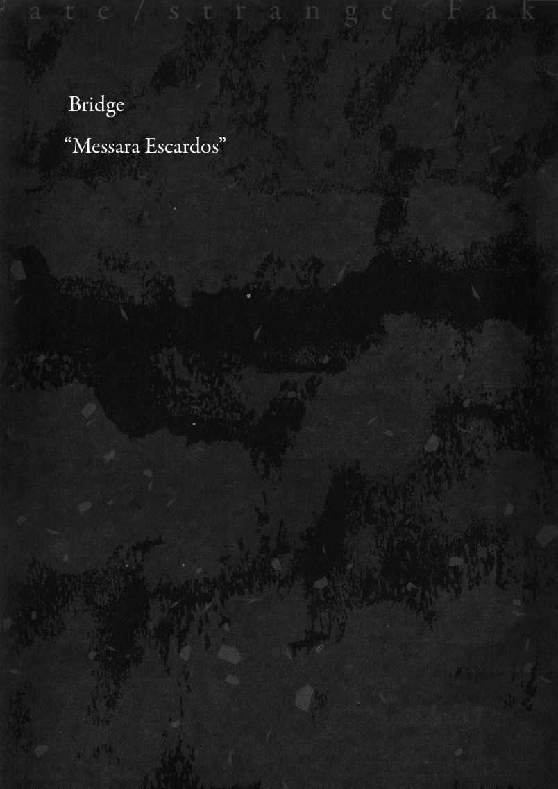

Há muito tempo, existiu um mago.
Embora estivesse abaixo do nível dos Magos, ainda assim era um mago poderoso e antigo, obcecado por ideias bizarras.
O nome desse mago era Messara Escardos.
O mago construiu seu ateliê, pequeno, mas profundo, num lugar que hoje se chama Mônaco. Numa conversa com um amigo seu que era um Mago e outros grandes magos, um pensamento lhe ocorreu.
Tudo começou numa conversa com um conhecido.
Foi ali que ele ouviu sua alegoria sobre possibilidades incontáveis. Mundos que poderiam ter sido, alinhados em paralelo ao nosso.
Era uma ideia que a maioria descartaria como conversa fiada, ou talvez como fábula ou piada...
Mas o mago Messara encontrou esperança naquelas palavras.
Sua tese como mago fora nebulosa até aquele momento, e ali ele sentiu a certeza de que seu cérebro estivera apenas esperando aquele instante para começar a transbordar ideias.
Ocultar a própria pesquisa é algo natural na sociedade dos magos, mas Messara ficou tão tomado de excitação que começou a contar a outros magos sobre seus sonhos e a propor que todos fizessem o mesmo que ele estava fazendo.
A maioria riu da estupidez do que consideravam um sonho impossível.
Alguns também comentaram que aquilo que ele desejava poderia ser alcançado simplesmente modificando o corpo de alguém, sem necessidade de esperar tanto tempo.
Considerando o nível de proficiência de Messara, aquilo de fato seria um atalho viável.
Mas Messara acreditava que o ponto central do projeto era justamente sua criação se concretizar por conta própria através de um processo evolutivo.
Duas pessoas ouviram suas ideias com sinceridade, embora não as endossassem.
Uma delas foi o homem que inspirou o plano de Messara: o Mago que mais tarde acumularia epítetos como Mystical Marshall, Kaleidoscope e Velho das Joias.
O outro mago era um caprichoso criador de bonecas de origem singular, que mais tarde acumularia epítetos como Magical Castle e Dark Lord of Finance.
Os dois homens ocupavam posições muito diferentes na vida, o que os levou a experiências distintas, mas ambas bastaram para fazê-los perceber que, embora as chances fossem pequenas, a ambição de Messara era possível.
Mas, talvez por conhecerem bem demais as consequências, não a endossaram.
Ainda assim, para Messara, isso bastava.
Ele tinha em seu círculo pessoas que debateriam suas teorias com sinceridade.
Só isso já lhe dizia que valia a pena apostar a própria vida. Com um sorriso no rosto, Messara dedicou os anos que lhe restavam ao seu plano.
Não, a própria vida não foi a única ficha que apostou.
Ele instrumentalizou o sangue de seus descendentes pelos séculos seguintes, talvez até por milênios.
A maioria dos magos, ao ouvir isso, responderia: "É simplesmente o que toda família de magos faz."
Muitas famílias de magos antigos oferecem seu sangue à tese de seu ancestral.
Mas os atos de Messara não seguiam esse senso comum.
Quando o antigo mago estabeleceu a família Escardos, montou um artifício para levar adiante sua pesquisa.
Quanto mais sua linhagem prosseguisse, mais perderia de vista o propósito da família.
Messara não podia confiar nos descendentes que jamais conheceria.
Ele era capaz de prever que, quando o objetivo estivesse próximo da conclusão, alguém tentaria concluí-lo em sua própria geração em vez de aguardar sua maturação.
Não posso permitir isso.
Messara rejeitou a paixão de seus descendentes antes mesmo de ela existir.
Minha criação se completará naturalmente num dia qualquer. Ela precisa. Não faz sentido deixá-la vir ao mundo em estado imperfeito. Se minhas teorias estiverem corretas, minha criação nascerá de modo natural e levará consigo tudo o que o clã Escardos um dia teve.
Era isso que significava instrumentalizar o sangue de seus descendentes.
Quando isso acontecesse, todos os seus descendentes magos estariam partindo do princípio de que os Escardos eram uma família sem tese, apenas com muita história. Assim, ou encontrariam alguma nova tese que explorasse seu singular Brasão Mágico ou simplesmente tentariam ganhar dinheiro e status no mundo da Magia.
Messara Escardos temia que seus descendentes obcecados por glória pudessem acrescentar modificações ao sistema evolutivo de seus Circuitos Mágicos ou ao Brasão Mágico numa tentativa de "se tornarem" sua criação.
Para ele, isso teria sido ainda pior do que ver os magos que haviam zombado dele virem roubar os frutos de sua pesquisa assim que aceitassem que aquilo era possível. Não que ele esperasse qualquer tipo de resultado nos primeiros mil anos.
A família Escardos esqueceu gradualmente seu propósito, como Messara desejava, e permaneceu sempre no mundo da Magia como uma entidade que nada fazia.
Sem qualquer fé em seus descendentes de um futuro distante, ele implantou um mecanismo insano em seu próprio filho e em seu Brasão Mágico.
O resultado: no que chega perto de um milagre, Messara Escardos concluiu sua travessia na corda bamba após mil e oitocentos anos.
Enquanto Messara ainda estava vivo, ele não tinha como saber se esse dia chegaria ou não.
Naquela época, dedicou um solilóquio não à linhagem que estava sacrificando, mas à única criança do futuro distante que veria aquilo concluído em sua geração.
"Oh, oh, minha distante criança. Homem ou mulher de meu sangue cujo nome desconheço, se você nascer antes do fim da Ordem Humana, então eu venci minha aposta. Você tem minha gratidão e minhas desculpas. Será considerado um prodígio nesse seu futuro distante, em que o Arcano será escasso. Alguns podem rejeitá-lo por isso. Essa é a natureza que estou concedendo ao seu corpo. Sua vida não será fácil. E, para completar, no instante em que herdar seu Brasão Mágico... você será apagado. Não morrerá, será apagado. Simplesmente desaparecerá, sem chegar a lugar algum nem ser inscrito no mundo. Mas, em troca, nosso planeta verá o nascimento de uma nova espécie primordial. Adeus, descendente que jamais conhecerei. Sinto muito, e obrigado."
Onde ninguém podia ouvi-lo, Messara agradeceu e pediu desculpas em voz alta a alguém que ainda nem havia nascido.
Poder-se-ia dizer que foi ali que ele menos se pareceu com um mago.
"Você é um sacrifício necessário."
E, muito tempo depois, uma criança nasceu.
A geração de que ele falava.
Flat Escardos, o garoto destinado a ser sacrificado à ambição da família Escardos.
No fim, Messara Escardos venceu sua aposta.
Mas falhou em prever muitos fatores.
O primeiro foi que os pais do garoto o temiam tanto que tramaram se desfazer do Brasão Mágico da família em algum lugar de onde ele jamais pudesse ser recuperado.
Os pais de Flat foram a um cassino clandestino famoso entre os magos de sua região e perderam de propósito tudo o que tinham, o que os levou a precisar hipotecar o Brasão Mágico como compensação pela dívida de jogo.
Messara teria apreciado a ironia extraordinária, já que o cassino era administrado por um de seus velhos amigos, aquele conhecido como Dark Lord of Finance.
Mas esse erro de cálculo foi trivial. Na verdade, Flat, com a ajuda dos amigos, aceitou o desafio da Casa de Fem e recuperou seu Brasão.
Os outros dois fatores, porém, estavam muito além do que Messara sequer cogitou considerar.
Um deles era que os talentos de Flat Escardos eram ainda mais aberrantes do que Messara havia imaginado.
E o outro era que o garoto conheceu alguém que mudou sua vida.
Um mago comum tomando emprestado o título de um Lord da Torre do Relógio.
Dias atuais, Torre do Relógio
"O Lord de Norwich não está recebendo visitas no momento. Por favor, retire-se."
"Poxa."
Ao ouvir as palavras de alguém usando o uniforme do Departamento de Políticas, um garoto se afastou cabisbaixo.
Ele era o aluno particular do criador de bonecas Rohngall e fora ao prédio de Norwich transmitir uma mensagem importante a El-Melloi II.
No entanto, membros de Políticas bloqueavam a entrada do edifício.
Ele conseguia ver um grupo de manifestantes, presumivelmente os atuais alunos de El-Melloi II, discutindo acaloradamente com um jovem rechonchudo que comandava uma guarda de homúnculos.
Vendo como todos se juntavam em torno dele, e não da mulher de quimono do outro lado, ele pôde supor que o rapaz era mais aberto ao diálogo do que ela.
O jovem aluno particular de Rohngall observou os estudantes, impressionado com o quanto se importavam com o professor.
A maioria dos professores da Torre do Relógio, especialmente os Lords, era tratada mais com medo do que com respeito.
Ele duvidava que até mesmo a notoriamente amigável Lord da Criação tivesse alunos tão apaixonados por ela.
Mas, para o garoto, aquilo fazia todo o sentido.
Embora muita gente de outras faculdades viesse assistir às aulas de Norwich depois que El-Melloi II se tornara seu Lord, antes disso muito poucos estudantes estavam matriculados no Departamento de Magia Moderna.
E, ainda assim, o Norwich de El-Melloi II agora era visto como uma força importante, capaz de virar de cabeça para baixo o equilíbrio de poder da Torre do Relógio.
É claro que o Departamento de Magia Moderna não era tão poderoso quanto qualquer uma das infames Três Famílias Nobres da Associação de Magos, mas dizia-se que a Sala de Aula El-Melloi tinha peso suficiente para desequilibrar a delicada balança entre as facções Neutra, Aristocrática e Democrática.
O garoto se lembrou da conversa que tivera com seu mentor alguns dias antes.
- "Werner Ceasarmund, o herdeiro da Magia das Borboletas. Roland Berzinsky. Org Rum. As irmãs Radia Pentel e Nazica Pentel. Fezgram von Senbern. O que esses nomes têm em comum?"
Ele respondeu: "São magos que ascenderam aos ranks Pride e Brand nos últimos anos", apenas para receber de seu mentor uma resposta chocante.
- "Todos eles são alunos da Sala de Aula El-Melloi."
Na época, ele já reagira com um silêncio chocado, mas, depois de ver Lord El-Melloi II pessoalmente, ficou ainda mais surpreso com o fato de ele não passar a impressão de alguém tão extraordinário.
Ele não parecia em nada um professor capaz de formar vários magos que deixariam sua marca na história da Torre do Relógio, mas o garoto conseguiu se convencer de que aquilo era uma forma de camuflagem para baixar a guarda dos outros.
"Que turma incrível. Talvez eu devesse pedir ao sr. Rohngall que me deixe assistir a uma aula algum dia..."
Mais tarde, ele pesquisou sobre Lord El-Melloi II e descobriu que ele acumulara inúmeras realizações.
Só a lista de alunos que ele formou já era medalha suficiente. Ela continha os nomes de vários magos que o jovem tomava como inspiração.
Svin Glascheit, o talentoso Mago Bestial que alcançou o rank Pride ainda nos tempos de estudante.
Yvette L. Lehrman, a gênio insana que lapidou gemas em Olhos Místicos de alto nível, bastante próximos dos naturais.
Caules Forvedge, o distinto Mago da Eletricidade que manipulava relâmpagos como se fossem parte de si.
Mary Lil Fargo, a estrela cadente do Departamento de Astromancia, que ganhou nome ao produzir uma teoria inteiramente nova para sua família em uma única geração.
Sajou Ayaka, que não permaneceu matriculada por muito tempo na Sala de Aula, mas ainda assim fez uso notório de seus talentos híbridos no Departamento de Botânica.
"E ainda tem... Não, essas duas eu não gostaria de tomar como modelo..."
Ele se lembrou de um par de magas mais infames do que famosas. Certa vez, o garoto fora vítima de um dos desastres causados por essa dupla, então preferiu esquecer as duas damas apelidadas de Pesadelos de Kischur.
E então o garoto se recordou de um último nome.
Flat Escardos, o aluno mais antigo da atual Sala de Aula El-Melloi. Aquele que, no momento, participava da Guerra do Santo Graal nos Estados Unidos. Um nome que já surgira em conversas anteriores.
Certa vez, ele perguntou a seu mentor Rohngall sobre esse gênio conhecido como A Benção Indesejada.
Depois de um momento de silêncio taciturno, Rohngall confirmou que não havia ninguém por perto e começou a falar.
- "Se puder, mantenha distância daquilo. Houve uma vez em que aquilo me pediu que construísse um boneco à sua imagem. Acabei recusando, mas os Circuitos Mágicos da Benção Indesejada despertaram meu interesse. Quando os investiguei, percebi uma coisa... Lord El-Melloi também deve ter percebido, assim como o criador de bonecas genial que certa vez achou aquilo interessante... A própria criança já era algo muito próximo de uma boneca criada para servir de receptáculo a alguma coisa. Tenho uma curiosidade mórbida de saber o que os ancestrais Escardos pretendiam inserir naquilo."